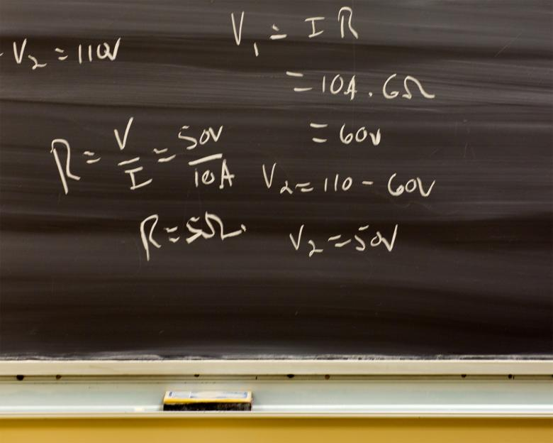

MathML
MathML er et xml-basert markeringsspråk som brukes for å vise matematiske formler korrekt på nettet. “Vanlig” HTML har ikke mulighet til å for eksempel vise at noe er opphøyet, eller vise brøker. Det har derfor lenge vært vanlig å bruke bilder i stedet for ren tekst for å vise matematiske formler, og dette har noen åpenbare ulemper.